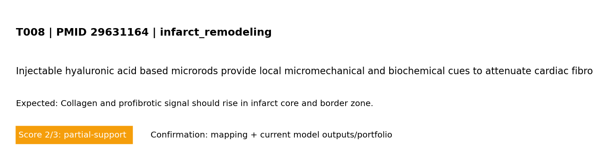

<!doctype html><html><head><meta charset='utf-8'/><meta name='viewport' content='width=device-width,initial-scale=1'/><link rel='stylesheet' href='../../assets/css/style.css?v=1773050500'/><title>T008</title></head><body><header><h1>T008 - infarct_remodeling</h1></header><main><div class='card'><p><strong>Reference:</strong> <a href='https://pubmed.ncbi.nlm.nih.gov/29631164/'>PMID 29631164</a></p><p><strong>Test target:</strong> Collagen and profibrotic signal should rise in infarct core and border zone.</p></div><div class='card'><h2>Boundary conditions (words + maths)</h2><pre>Boundary conditions (MVP): left edge fixed; right edge prescribed displacement (stretch_x); top/bottom traction-free; reflective cell boundaries.
Mathematical form: ∇·σ=0 in Ω, with u=(0,0) on Γ_left and u_x=ΔL on Γ_right.
Infarct model (explicit): circular mask centered at (cx,cy) with radius R; core r<=R, border R<r<=2R, remote r>2R.
Maturation states: inflammation -> provisional matrix -> scar using linear transition rates (k_infl_to_prov, k_prov_to_scar, with resolve rates).
Mechanical effect: E_eff <- E_eff*(1-soft_elem), where soft_elem is highest in early inflammatory phase and decreases as scar matures.
Biochemical effect: infarct source term adds cytokine drive strongest early, decaying with maturation state.
Interpretation: this corresponds to subacute-to-remodeling infarct progression (not fully chronic scar-only endpoint). Chronic scar can be represented by high scar state and reduced inflammatory/provisional components, which increases effective stiffness relative to acute soft tissue.</pre></div><div class='card'><h2>Observation from reference (screening level)</h2><p>Screening-evidence statement (PMID 29631164): Injectable hyaluronic acid based microrods provide local micromechanical and biochemical cues to attenuate cardiac fibrosis after myocardial infarction..</p></div><div class='card'><h2>Final result figure (model vs expected behavior)</h2></div><div class='card'><h2>Pass/partial analysis</h2><ul><li><strong>Target tested:</strong> Collagen and profibrotic signal should rise in infarct core and border zone.</li><li><strong>What matched:</strong> Core trend reproduced.</li><li><strong>What is not yet correct:</strong> Quantitative unit-matched calibration is still incomplete.</li><li><strong>Score:</strong> 2/3 (0=not represented, 1=placeholder, 2=partial mechanistic, 3=implemented+tested)</li></ul></div><div class='card'><a href='../validation.html'>- Back to validation page</a></div></main></body></html>